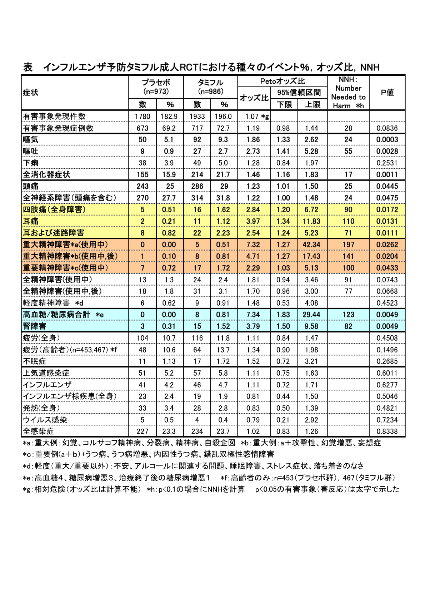

健康成人を対象としてタミフルの睡眠に対する影響が検討された結果、タミフル群の睡眠時間が，やや長い傾向が見られました。
予防のための臨床試験（ランダム化比較試験）でも、嘔吐や頭痛が高頻度に見られていましたので、精神神経症状に注目して、もう一度この臨床試験の結果を見直したところ、極めて重大な事実が判明しました。TIP誌2008年7/8月合併号に第2論文として掲載予定ですが、その重要性を考え、インタネットで速報いたします。
精査の結果は驚くべきものでした。個々の精神障害の病名ごとにみると１人ずつにしか現れていなかったのですが、幻覚や統合失調症、精神病など、重大な精神障害についてまとめてみると、タミフルでは5人に発症していました。
一方、プラセボ群には全く発症しなかったのですから、タミフル群で多発していたことは明瞭です（表参照：統計学的に有意でした：Petoオッズ比7.32；95%信頼区間1.27-42.34，p=0.0262)。
また、使用終了後までみると、精神病が1人プラセボ群で発症しましたが、タミフル群では，さらに攻撃性，幻覚増悪，妄想症が各１人発症し、合計8人となりました（Petoオッズ比は4.71；95%信頼区間1.27-17.43，p=0.0204)でした。
それから、四肢痛や耳痛もタミフル群に有意に多く報告されていました。これら一見無関係に見える痛みの症状も、多数の異常行動の情報の中にしばしば報告されています。体のあちこちが「痛む」のは、幻覚の一つとしての「幻痛」の症状である可能性があります。そう考えると、やはりこれらの神経症状も、精神障害である可能性のあると考えられます。
この点についても、タミフルと異常行動との因果関係を強く支持する重要な知見であるので、TIP誌2008年7/8月合併号に掲載予定の第2論文をインタネットで速報いたします。
